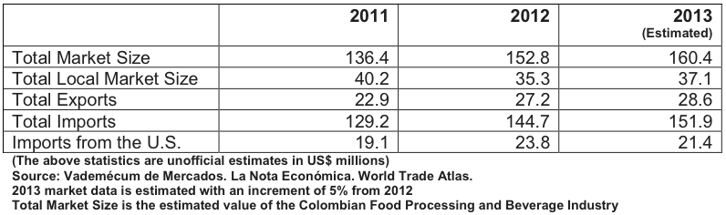
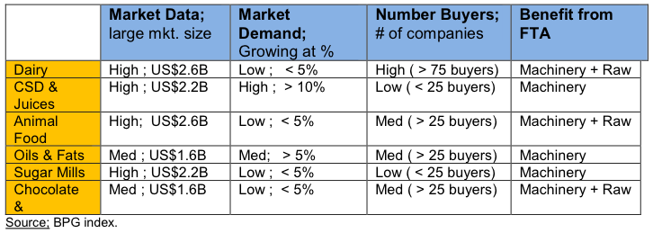

The Colombian Processed Food and Beverage Equipment market caters to an industry that produces approximately US$22 billion in revenue per year. The food industry is comprised of 10 sub sectors: sugar mills, rice mill, cereal mills, oils and fats, dairy products, chocolates and candy, meat products, animal food products, bread and pasta, and others. The beverage industry is also comprised of three subsectors: beer, carbonated soft drinks and juices, and spirits.
The food and beverage processing and packaging (FPP) industry employs about 19.3 percent of the domestic labor force, concentrated in the five main metropolitan areas of Bogota, Medellin, Cali, Cartagena and Barranquilla. FPP equipment from the United States enjoys an excellent reputation and is widely accepted in the Colombian market due to high quality, outstanding customer service, a favorable exchange rate and low shipping costs. The strongest U.S. competitors are Italy, Brazil and Germany. Although the U.S. product participation decreased about 10 percent in 2013 compared to 2012, the potential market for U.S. equipment remains high.
In 2013 the food industry grew approximately 9 percent, compared to 6 percent in 2012, while the beverage industry is still recovering from a decrease in sales in 2010. Within these industries, the dairy, animal food and carbonated soft drinks and juices sectors were the three markets highlighted as the most attractive in terms of supply machinery and equipment. To put into perspective the importance of the food and beverage import market, this industry accounts for 5.4 percent of all Colombian imports. In other words, of the approximately US$59 billion of imports into Colombia in 2012, imports to supply the food and beverage industry totaled US$ 3.18 billion.
Among the most important sectors in the food processing equipment industry in Colombia are sugar mills, rice mills, cereal mills industry, the oils and fats sector, dairy products, the chocolate and candy industries, and the meat and beverage sectors. Most of the equipment and raw materials required for those industries are imported. The implementation of the United States -Colombia Trade Promotion Agreement (commonly referred to as the FTA) will increase opportunities for U.S. exporters on this Industry.
Based on market data and growing demand, and taking into consideration the following recap of market entry of machinery, processing equipment and raw material to supply local food and beverage production, the following sectors are considered the most attractive for U.S. exporters:

Colombia is the third largest dairy products producer in Latin America, after Brazil and Mexico. The dairy sub-sector, along with the following services and equipment offer the best market potential for U.S. exporters: dairy production equipment; bottling services (alcoholic and non-alcoholic); brewery equipment; mixing, grading and filtering apparatus; heat exchangers; filling, sealing and capping; preserved/canned meat and fish products; and horticulture packaging equipment.
Oils and fats processing is another promising industry segment, given that Colombia produces nearly 37.7 percent of total regional production and is listed among the top four producers of crude palm oil yield in the world. The sugars and syrup segment, followed by canned meat, poultry and fish products, as well as fresh vegetable and fruit packaging, are also promising industry niches. Another key prospect is snack processing and packaging equipment. Beverages have been the fastest growing segment so that the National Industry Association (ANDI) has recently created a Beverage Chamber, to provide assistance to companies devoted to this sector.
The recent influx of economic data regarding foreign direct investment and a decrease in unemployment show that Colombia is on its way to perform at all-time highs in terms of economic activity.
Market opportunities for U.S. manufacturers vary broadly, determined by equipment size and production capacity. Although there are a significant number of large food processors capable of handling large production capacity (such as SAB Miller-Bavaria, Nacional de Chocolates, Colombina, Postobon and Frito Lay), the largest segment with the highest purchasing potential is the Small- and Medium Sized Enterprise (SME) group, which requires less installed capacity.
Competition from local equipment producers in this sector is minimal. The quality of local technology has improved for basic equipment and spare parts manufacturing. Local production is still undeveloped when compared to the United States and other countries.
This is especially true in terms of competing with the latest technologies such as nanotechnology and electronic/robotics used for production/packaging lines. The May 2012 implementation of the FTA emphasized the importance of improving the competitiveness of this sector. The FTA eliminated the five to 15 percent Colombian tariffs on U.S. products for this industry and will significantly increase the competitiveness of U.S. food machinery and packaging equipment in the Colombian market.
Alimentos Magazine, Axioma Communications LTDA. http://www.revistaialimentos.com.co
Asociación Nacional de Industriales (National Industries Association). www.andi.com.co
Banco de la Republica (Central Bank). www.banrep.gov.co
DANE (National Administrative Department of Statistics). www.dane.gov.co
Superintendencia de Industria y Comercio. (Governmental body which regulates commerce). www.sic.gov.co
La Nota Económica.(Business Magazine) Vademécum de Mercados.
For More Information
Please contact Julio Acero, Commercial Specialist of the U.S. Commercial Service at the U.S. Embassy Bogotá, Colombia at julio.acero@trade.gov or 011-571-275-2635. You can also visit our website at www.export.gov/colombia.